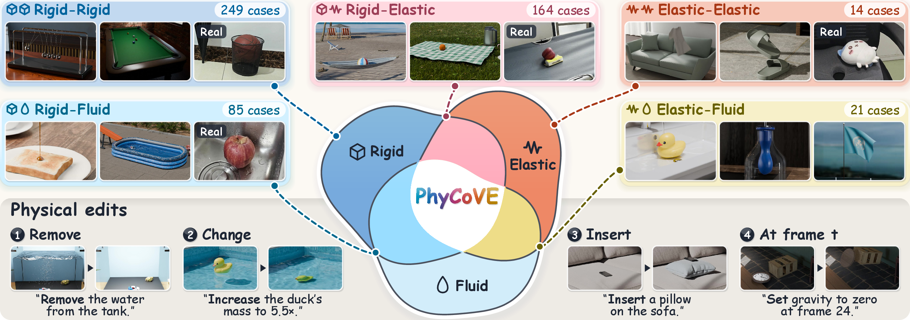
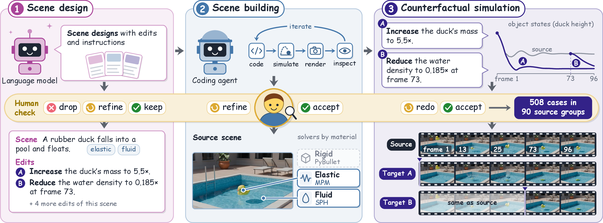
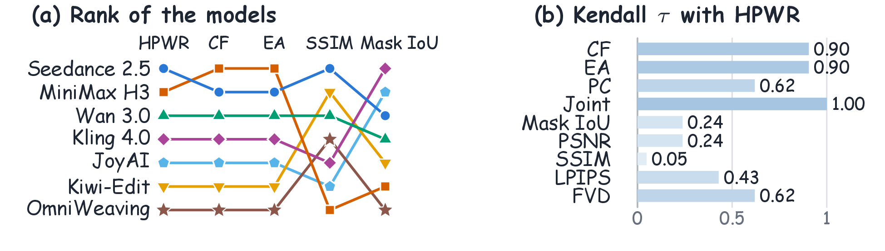
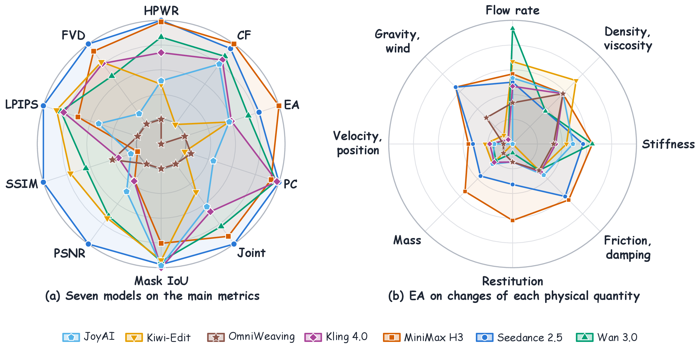

PhyCoVE
Benchmarking Physical Counterfactual Video Editing
across Diverse Material Dynamics
Interactive Explorer
Source vs. Counterfactual Target
Filter by interaction pattern (real-recorded scenes are marked Real).
Both videos play in sync at 24 fps to show the physical consequence of each edit.
Abstract
Physical counterfactual video editing turns a source video and a language-specified physical edit at a given execution frame into a counterfactual video that shows how the scene would evolve after the edit. Existing evaluations with counterfactual target videos mainly cover object removal or specific rigid-body motions, although real scenes also involve elastic deformation, fluid flow, and interactions among rigid bodies, elastic solids, and fluids. We introduce PhyCoVE, a benchmark of 533 cases on 110 source videos that covers rigid, elastic, and fluid dynamics in five interaction patterns, with edits that remove an object, change a physical quantity, or insert a new object. For the simulated cases, a language model proposes scene designs, coding agents build them with solvers suited to each material and physically based rendering and then simulate each edit from the source scene state, and humans check every stage. For the real cases, we record continuously from one camera position before and after each edit. We also propose Counterfactual Fidelity (CF), a metric that applies across materials and their interactions and measures how much of the physical change from the source video to the target video a generated video reproduces. Evaluating seven open-source and commercial video editing models shows that CF ranks them nearly as human preference does, yet even the best model reproduces only about one seventh of the physical change.
Benchmark Scope
Diverse Materials, Coupled Interactions & Physical Edits
Every released video is standardized to 1280×720, H.264, 24 fps, and 96 frames (4 s),
paired with vague and quantitative instructions in both English and Chinese.

| Benchmark | Task | Reference | Dynamics | Real | |||
|---|---|---|---|---|---|---|---|
| Target | States | R | E | F | |||
| NRVBench | Edit | × | × | × | ✓ | ✓ | ✓ |
| VOID | Edit | ✓† | × | ✓ | ✓ | × | ✓ |
| PCVE-RigidBench | Edit | ✓ | ✓ | ✓ | × | × | × |
| VideoPhy | Gen. | × | × | ✓ | ✓ | ✓ | × |
| Physics-IQ | Gen. | × | × | ✓ | ✓ | ✓ | ✓ |
| CRONOS | Gen. | × | × | ✓ | × | × | × |
| Physion++ | QA | × | ✓ | ✓ | ✓ | ✓ | × |
| ContPhy | QA | × | ✓ | ✓ | ✓ | ✓ | × |
| CoPhy | Pred. | ✓ | ✓ | ✓ | × | × | × |
| PhyCoVE | Edit | ✓ | ✓ | ✓ | ✓ | ✓ | ✓ |
Comparison with related benchmarks. Task is video editing (Edit), generation (Gen.), question answering (QA), or state prediction (Pred.). R, E, and F stand for rigid, elastic/deformable, and fluid dynamics. †Only for synthetic test videos.
Dataset Construction
Human-Verified Counterfactual Simulation Pipeline
Material-suited solvers (PyBullet/MuJoCo, IPC/MPM, SPH/FLIP) simulate each edit,
paired with Blender physically based rendering and human checks at every stage.

Evaluation Metric
Counterfactual Fidelity (CF)
Standard visual metrics (PSNR, SSIM, LPIPS, Mask IoU) reward leaving the source unchanged, since unaffected regions already match the target.
Counterfactual Fidelity (CF) measures how much of the source-to-target physical change a generated video reproduces across rigid motion, elastic deformation, fluid flow, and object presence.
- CF = 1
- Reproduces the full target physical change
- CF = 0
- Retains the unedited source dynamics
- CF < 0
- Changes away from target or loses object

Benchmark Results
Leaderboard
Open-source and commercial models evaluated on physical metrics, visual fidelity, and human preference.
Click any Overall metric header to sort, or click Submit Results to add your model.
| Model | Human | Physical Metrics | Visual Fidelity | |||||||
|---|---|---|---|---|---|---|---|---|---|---|
| HPWR ↑ | CF ↑ | EA ↑ | PC ↑ | Joint ↑ | Mask IoU ↑ | PSNR ↑ | SSIM ↑ | LPIPS ↓ | FVD ↓ | |
| No edit (source control) | — | 0.000 | — | — | — | 0.359 | 30.03 | 0.960 | 0.043 | 147 |
| Kendall τ with HPWR | — | 0.90 | 0.90 | 0.62 | 1.00 | 0.24 | 0.24 | 0.05 | 0.43 | 0.62 |
| Spearman ρ with HPWR | — | 0.96 | 0.96 | 0.82 | 1.00 | 0.29 | 0.39 | 0.07 | 0.54 | 0.75 |
Main results on PhyCoVE. HPWR and Joint are percentages; EA and PC are 1–5 ratings. Bold and underline mark best and second best. Kendall τ / Spearman ρ are computed across the seven paper baselines with blinded human evaluation (10 annotators, 500 comparisons, 1,500 judgments).
| Model | Remove (178) | Change (334) | Insert (21) | ||||||
|---|---|---|---|---|---|---|---|---|---|
| CF ↑ | EA ↑ | HPWR ↑ | CF ↑ | EA ↑ | HPWR ↑ | CF ↑ | EA ↑ | HPWR ↑ | |
Results by edit type. VOID operates on removals only. Blue and terracotta tints indicate performance above or below source-like parity (0 for CF, 1 for EA, 50% for HPWR).
| Model | Rigid–Rigid (249) | Rigid–Elastic (164) | Rigid–Fluid (85) | Elastic–Fluid (21) | Elastic–Elastic (14) |
|---|
Counterfactual Fidelity (CF) by interaction pattern. Model rankings shift across material regimes: Wan 3.0 leads on rigid–rigid scenes, while MiniMax H3 and Seedance 2.5 lead on elastic and fluid interactions.
| Model | Physical Metrics | Visual Fidelity | |||
|---|---|---|---|---|---|
| CF ↑ | Mask IoU ↑ | PSNR ↑ | SSIM ↑ | LPIPS ↓ | |
Results on classic rigid-body motion. Evaluated on 10 simulated cases with classic rigid-body dynamics. VideoPhysEdit simulates edits in a reconstructed physical scene and reaches CF 0.481 (0.432 on the eight parameter changes, vs. ≤ 0.088 for all seven video editing models). Bold and underline mark best and second best.

Plausible video, missed physics
All seven models exceed 4.0 on Physical Commonsense (PC), yet max out at 2.20 on Edit Adherence (EA) and 0.134 on CF—preserving source dynamics instead of simulating the intervention.
Parameter edits remain unsolved
Changes of mass, stiffness, density, or flow rate yield a top CF of just 0.019; 79% of generated videos stay within [−0.25, 0.25], close to the unedited source.
Premature execution timing
Across the nine later-frame removal cases, 44 of 63 generated videos remove the object before the requested execution frame, failing to preserve the pre-edit history.
Qualitative Analysis
Side-by-Side Model Comparisons
Compare Source, Counterfactual Target, and all seven evaluated models in sync.
Each model card displays its per-video Counterfactual Fidelity (CF) score.
Loading comparison…
BibTeX
@article{yue2026phycove,
title = {PhyCoVE: Benchmarking Physical Counterfactual Video Editing across Diverse Material Dynamics},
author = {Yue, Conghan and Chen, Yuanjie and Xiao, Yunyan and Peng, Zeyu and Ye, Xingsong and
Gao, Ya and Huang, Yanglin and Zhang, WeiYao and Han, Yue and Chen, Zhineng and Jiang, Yu-Gang},
journal = {arXiv preprint arXiv:2611.29184},
year = {2026}
}